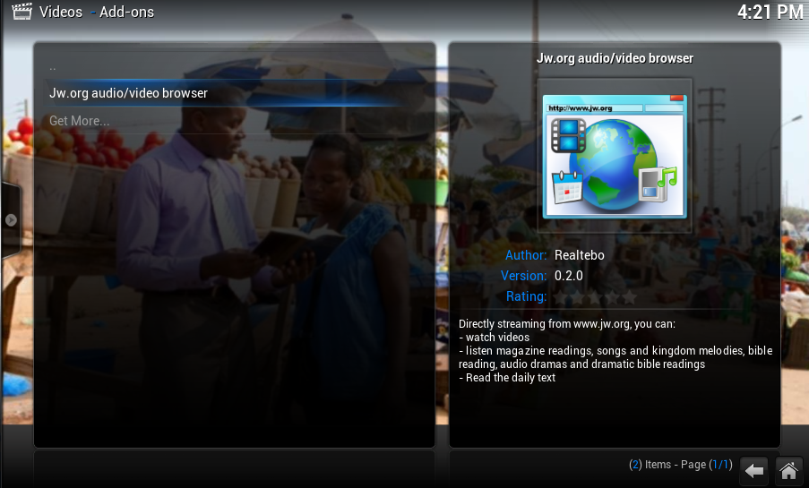
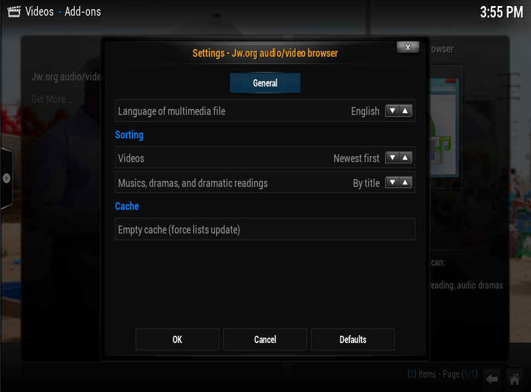
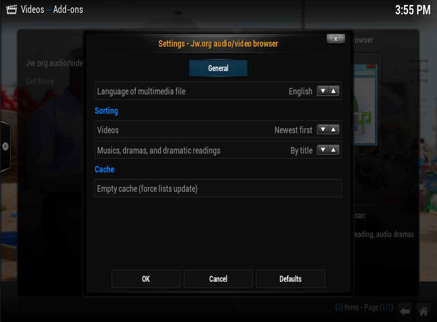

Disclaimer
This plugin don't break any copyright, because it's simply a different kind of browser. Contents are read from web pages, and then served to user, like your Firefox, Safari or mobile Browser. Only exception is background image: it cannot be dinamically loaded, so it's cached.
Features by XBMC section
- Music: bible reading, magazines (since year 2012, filterable like on web site by year and magazine), musics and songs, dramas, dramatic bible readings
- Video: all of videos available on web site, showed from latest (but customizable from add on settings), filterable by categories
- Program: daily text
- Addon settings: language of content, separated config of view order of video and audio files, manual clean of cache to force file index redownload (updated every 24hr)
Actually working on reading news from "Newsroom" and "About us -> Activities" section, and reading the week program from online watchtower library; this features will be released at v0.3.0
Language support
- Afrikaans ("Afrikaans") - no audio for Bible and Magazines
- Dutch ("Nederlands")
- English ("English")
- German ("Deutsch")
- Greek ("Ελληνική") - no audio for Bible
- Italian ("Italiano")
- Polish ("Polski")
- Portuguese and Portuguese from Brasil ("Português")
- Spanish ("Español")
Do you want to help me with new languages ?
Join to Transifex, join xbmc-addon translation team of your language, and wait ... periodically new tranlsations will be automatically imported into master branch
Transifex jworg addon translation project
Please note that a new content language will be supported only if string translation reach 100%; please keep updated the translations !
I think this is not a heavy request, because count of strings to translate is < 40
Install:
This addon is now part of official repository. Use the addon browser to search jw.org browser directly from your xbmc installation menu
- Latest stable version on addon repository is 0.2.1.
- v0.3.0 should be ready in a couple of days
Bug ? Ideas ? Complains ?
Feel free to open a new issue. Please refer every time to your specific version of the addon, and include eventually the step to reproduce a bug.
Tested platforms
- Windows 7 & 8, 32 & 64bit
- Linux Mint 12 .. 14
- Raspberry PI with Xbian
- Raspberry PI with OpenElec
- Android 4.x
All of these have Frodo "12.2" version of XBMC
Screenshot



 
